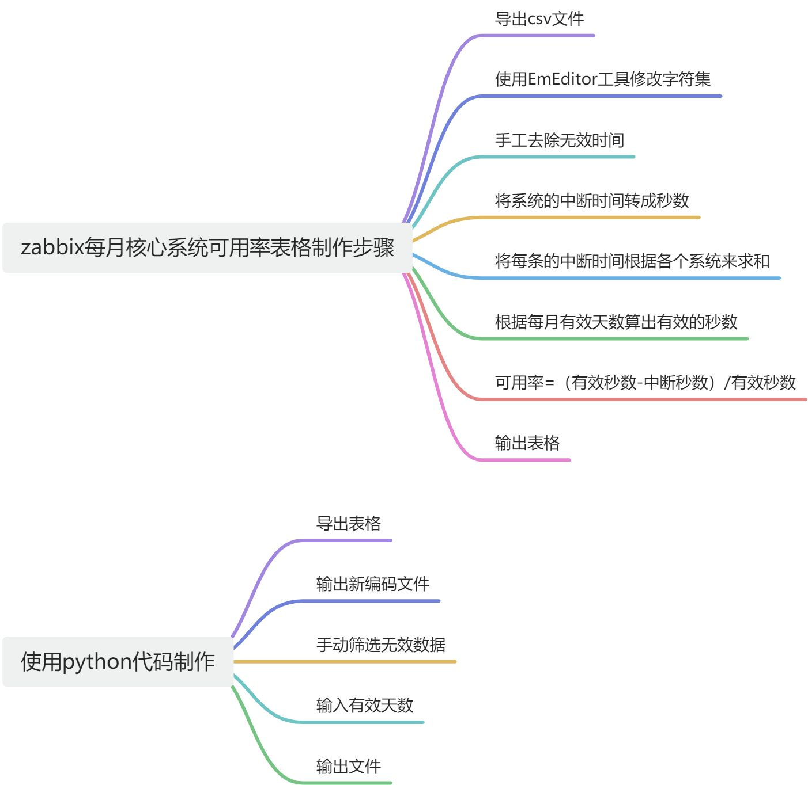

5.使用场景
重复性的工作场景解决¶
核心系统可用率报告
场景：我需要通过zabbix导出的表格数据处理成核心系统可用率报告。

处理步骤：
- 需要转换编码为gb2313，导出默认为utf-8
- 确认无效的时间，通过动作为空确认，人为将无效时间的数据设为空
- 将持续时间 11h 11m 11s 这种格式数据转成秒数
- 将本月有效天数*14（8-22点） * 3600转成本月有效秒数
- 将每个系统的中断时间求和。
- 得出每个系统可用率，（本月有效时间-中断时间）/本月有效时间
- 得出可用率
如何让ai帮我省略这些复制过程和计算过程
- 计算过程告诉ai
- 首先我让ai通过python帮我筛选出动作列为空的数据
- 直接告诉 将这种格式的11h 11m 11s时间数据转为秒数
- 再根据本月有效天数*14（8-22点） * 3600转成本月有效秒数
- 根据公式计算出系统可用率
- 最后输出文件
- 打包成exe文件
具体自然语言
效率提升：30分钟->3分钟，而且还得跟着文档操作，现在只需要手工筛选后运行程序，exe运行点两下，最后复制结果到excel
后续优化，写一个定时运行爬虫直接爬取相应表格，自动进行转换编码和输出，计算输出对应表格
自然语言转语言函数¶
因为每门语言都有很多的api，我们不一定知道每个api的作用，那个api适合我们的场景
1.JavaScript列表头插入一条数据，列表头插入一条数据
列表头插入api使用较少，如果查阅百度谷歌，可能需要手动筛选，直接询问ai，它会直接给出相应的api和使用示例
如：
在 JavaScript 中，你可以使用 unshift 方法在列表头部插入一条数据，使用 push 方法在列表尾部插入一条数据。以下是这两种操作的示例：
在列表头部插入一条数据：
| Text Only | |
|---|---|
在列表尾部插入一条数据：
| Text Only | |
|---|---|
在这两个示例中，unshift 方法用于在列表头部插入数据，push 方法用于在列表尾部插入数据。确保替换示例中的数据和列表以适应你的实际需求。
并且他将注释和用户实列都给我们了，很方便我们学习和使用，下次遇到就可以直接使用了。
有了ai，我们就相当于有一个编程大神手把手的教我们写代码，非常方便，并且如果遇到一些异常可以问他， 他会给出异常可能引起的原因和可能可以解决方案。
linux终端命令使用¶
比如我们现在需要以交互模式进入容器，可能我们不熟练的话，可能就会忘记，直接询问ai即可马上得到答案，不用我们去翻笔记和把百度，节省了很多时间，还有就是不同版本的网络ip修改，可能我们平时修改的ip是7版本的系统，使用8版本的话，可能一之间不知道如何修改，直接对ai说：我想将centos8的ip修改为xxx，网关修改为xxx，dns修改为xxx等，他就会马上给出答案，这种常见问题他是经过大量的数据训练的，大部分时候答案都是对的，以及防火墙管理，比如我们要开放指定端口的防火墙流量，就可以这样说：centos8开放8080端口的流量，允许流量进出。还有selinux的管理，有的服务或者程序可能会被selinux阻止，需要关闭，一时间又想不起来，直接对它说：centos8关闭selinux。
总结：ai可以教我们很方便的使用linux的命令，相当于一个知道非常多命令的一个知识库，根据我们的自然语言转换成命令实现。
简易脚本的编写¶
场景1：需要批量修改hosts解析，修改注册表
直接对ai说，帮我把xxxxxxx解析写入到windows的hosts解析，修改xxxx的xxxx值的注册表，使用bat文件。马上就可以输出一个脚本。
场景2：虚拟桌面文件权限问题
文件权限问题1：用户旧桌面备份文件因为管控管理员权限，无法正常读写，甚至部分文件夹无法正常打开，需要解决权限问题，如果在备份时可以不带权限，还原进一个文件夹，就可以直接用脚本然后下发一个策略，建一个文件并且授权，然后还原到这个文件夹即可。
文件权限问题2：如果nbu还原时，无法取消权限，则可能需要脚本来进行遍历文件夹的文件进行提权。
像这种简单的脚本，将我们的需求准备描述给ai就可以帮我们写出脚本，自己在测试环境进行测试可行性，最后评审下发，可以提高非常多的效率。
等等很多重复简单的工作都可以使用脚本来执行。
ai语音对话¶
可以语音对话，像真人一样，家里有小孩的可以作为家教来使用。
演示：
除法好难啊，我该怎么办？
软件自动安装脚本¶
horizon8.0client安装
运行bat脚本自动安装
演示，虚拟机进行演示
其他¶
ai还可以教我们使用docker搭建靶机，一般的靶场都会有容器版本，使用docker搭建非常快，不用了以后直接删除容器即可。
dvwa靶场搭建
总结¶
ai就相当于你旁边坐着一个拥有超级大脑的人，并且这个人无偿回答你，你想问，他就在，非常方便。